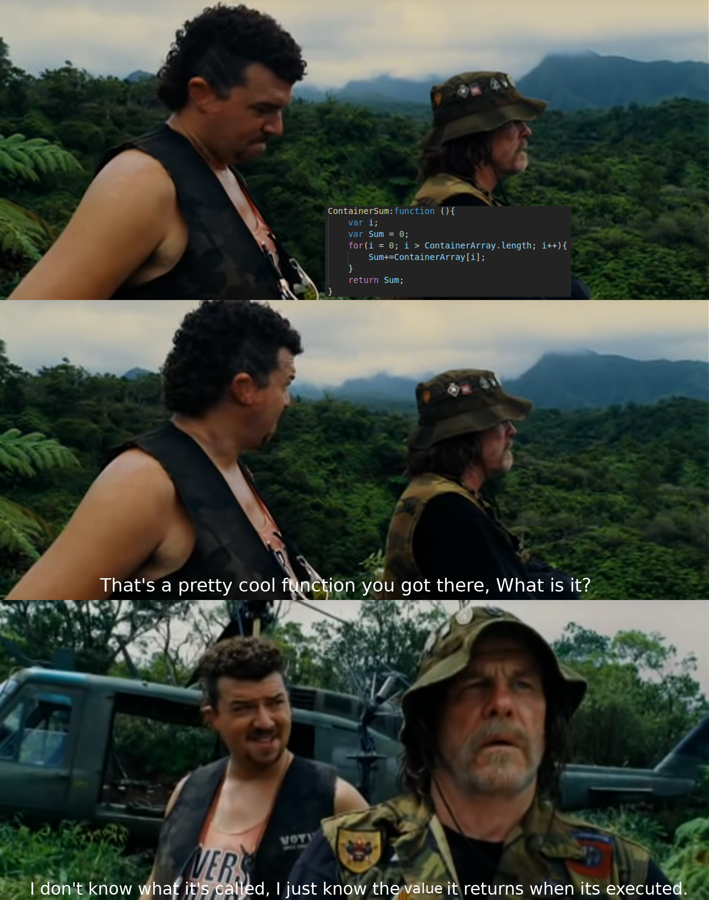
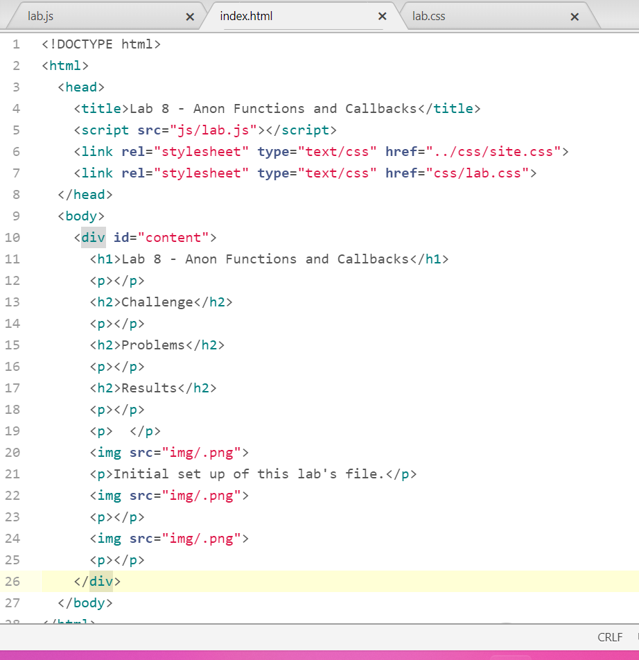
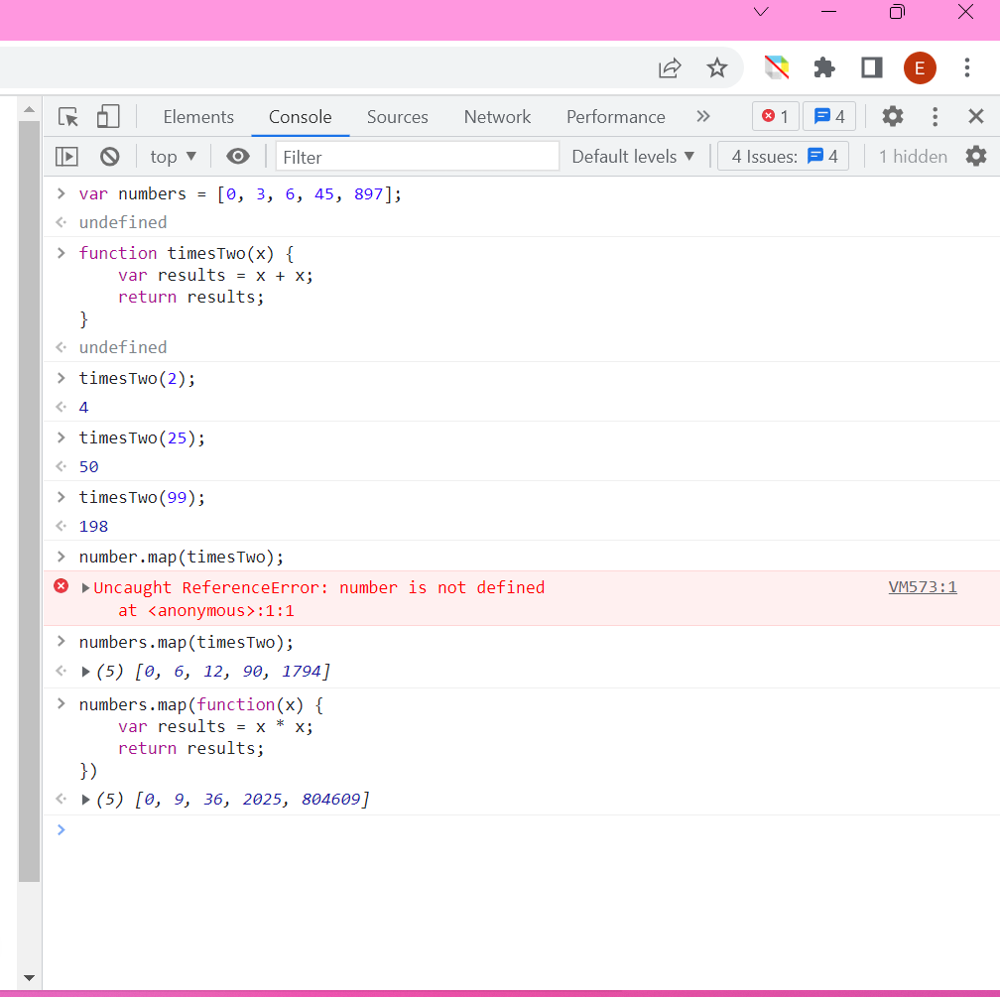
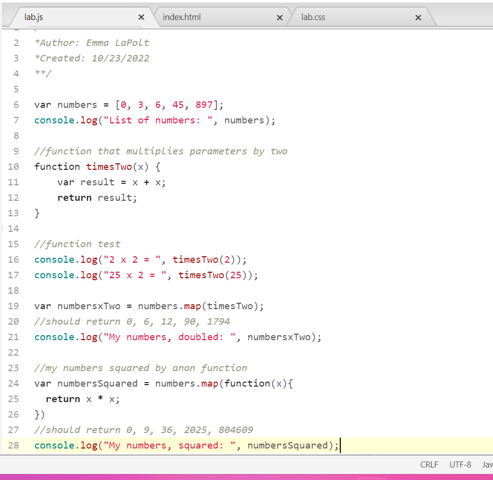
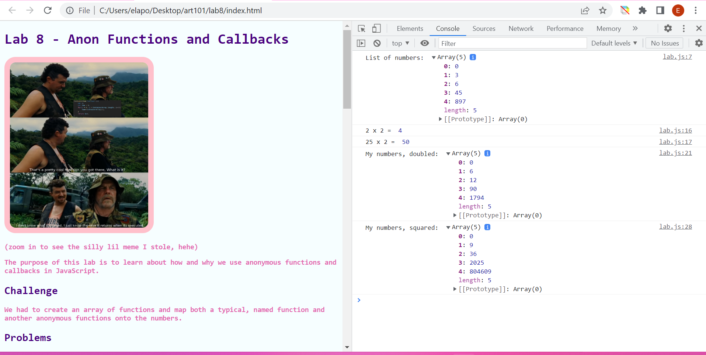

Lab 8 - Anon Functions and Callbacks
(zoom in to see the silly lil meme I stole, hehe)
The purpose of this lab is to learn about how and why we use anonymous functions and callbacks in JavaScript.
Challenge
We had to create an array of functions and map both a typical, named function and another anonymous functions onto the numbers.
Problems
No problems this time.
Results
You can see the results by opening the console on this page!

(Initial set up of this lab's file.)
(Code tested in the console.)
(This lab's js file.)
(This page viewed locally, with the console open.)